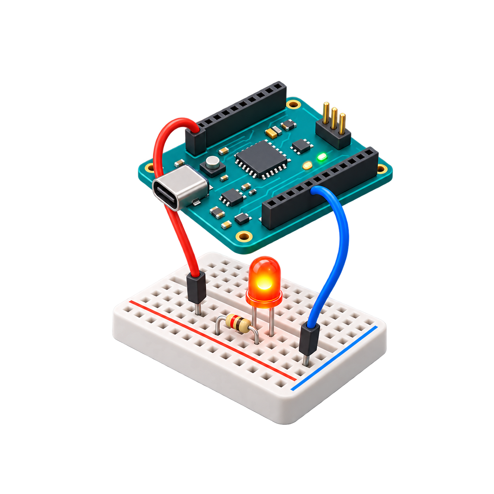

Apple Vision Pro · 開發中不必先買零件，也能親手理解一條電路為什麼會亮、會壞，或沒有反應。
Spatial Electronics Lab 把電腦、相容開發板、麵包板與電子元件放到混合實境工作台，讓初學者從接線、量測、程式到故障診斷，完成一條可以反覆練習的學習路徑。
從第一顆 LED，一路走到感測與 PWM
目前的課程把後一堂建立在前一堂已完成的電路上。學習者不只是照著圖重做，而是保留接線、量測與程式結果，再把它改造成下一個專案。
可以放大、移動與直接接線的混合實境工作台
元件、麵包板組合、工具箱與整座工作台都能在空間中移動與縮放。接線模式會以空心端點標記和獨立觸控區協助選取：先點一個端點，再點另一個端點，就能建立導線；需要修改時，也可以聚焦單一零件或導線，暫時降低周圍物件的干擾。
元件庫已包含虛擬電腦、相容開發板、麵包板、導線、電阻、LED、按鈕、光敏電阻、熱敏電阻與伺服馬達。課程目前使用其中一部分，其餘元件則為後續實驗與自由練習保留。
Code Studio 把草稿、上傳程式與即時訊號分開
程式課與自由練習可以從虛擬電腦開啟 Code Studio。編輯中的草稿不會直接改變開發板；只有通過安全分析並經由虛擬 USB 上傳後，新的程式才會開始執行。畫面同時提供診斷、序列輸出、類比讀值與 PWM 訊號，方便把程式行為與工作台上的實際結果對照。
App 本身不連接外部 AI 服務。需要協助時，可以分享一段針對目前課程整理好的提示詞，再將外部工具產生的內容透過系統貼上功能帶回；貼入內容會先移除說明文字與 Markdown 外框，再由受限制的 Arduino-style 教學語法分析器檢查，不執行任意原生程式碼。
錯誤不是跳出的紅字，而是電路的一部分
模擬器會依實際端點關係、麵包板連通、元件值、已上傳程式與實體控制重新計算。它能區分 LED 過電流、電源短路、極性反接、輸入浮接或飽和、按鈕接錯、非 PWM 輸出、程式與接線不一致，以及草稿已修改但尚未上傳等狀況。
例如破壞性的 LED 過電流會閃光、播放位置警告音，並把燒焦狀態保存到本機專案；修正原因之後仍要主動更換零件或復原，送出課程答案不會自動把它修好。
每位學習者保留自己的進度
啟動後可以建立不同學習者名稱，分開保存課程完成狀態、測驗嘗試、未完成電路、零件位置與工作台配置，也能在確認後刪除單一學習者及其練習資料。繁體中文與英文介面、課程內容和示範旁白都已納入目前版本。
開發狀態與隱私邊界
Spatial Electronics Lab 目前仍在開發與 Apple Vision Pro 實機驗收階段，尚未在 App Store 上架。核心課程、電路模擬、Code Studio、雙語內容與學習進度均在裝置端運作；目前沒有啟用雲端同步，也不需要開發者營運的帳號或 AI 伺服器。
Learn why a circuit lights, fails, or stays silent—before buying physical parts.
Spatial Electronics Lab places a virtual computer, compatible development board, breadboard, and electronic components on a mixed-reality workbench, guiding beginners from wiring and measurement to programming and fault diagnosis.
From a first LED to sensing and PWM
The current course carries completed circuits into the next lesson. Learners do not rebuild from a picture every time; they preserve wiring, measurements, and uploaded programs, then reshape that evidence into the next project.
A mixed-reality workbench that can move, scale, and wire directly
Individual parts, breadboard assemblies, the toolbox, and the complete workbench can be moved and magnified in space. Wiring Mode uses hollow terminal markers and dedicated touch targets: select one terminal, then another, to create a wire. Focus mode can isolate a part or a wire and reduce spatial-input interference from nearby objects.
The catalog already defines a virtual computer, compatible development board, breadboard, wire, resistor, LED, button, photoresistor, thermistor, and servo. Current lessons use a focused subset while the remaining parts support future projects and open practice.
Code Studio keeps drafts, uploaded programs, and live signals distinct
Programming lessons and the open playground can launch Code Studio from the virtual computer. Editing a draft never changes the running board by itself. A new program begins only after safe analysis and an explicit upload through the virtual USB connection. Diagnostics, serial output, analog readings, and PWM telemetry help connect code to the physical result on the workbench.
The app does not contact an external AI service. When help is useful, learners can share a course-specific prompt, then return externally produced code through the system paste control. Imported text is stripped of surrounding prose and Markdown before a constrained Arduino-style teaching analyzer checks it. Arbitrary native code is never executed.
Faults remain part of the circuit instead of becoming a red answer label
The simulator recalculates from actual terminal relationships, breadboard connectivity, component values, uploaded firmware, and physical controls. It distinguishes LED overcurrent, supply shorts, reversed polarity, floating or saturated inputs, miswired buttons, non-PWM outputs, code-and-wiring mismatches, and edited-but-not-uploaded firmware.
A destructive LED overcurrent, for example, flashes once, plays a positional warning, and persists the charred part in local project data. Correcting the cause does not silently repair the component; the learner must replace it or use Undo.
Separate progress for each learner
Named learner profiles keep course completion, assessment attempts, unfinished circuits, component transforms, and workbench placement separate. A learner and all associated practice data can be deleted after confirmation. Traditional Chinese and English interfaces, course content, and synchronized demonstration narration are included in the current build.
Development status and privacy boundary
Spatial Electronics Lab remains in development and Apple Vision Pro hardware validation; it is not yet available on the App Store. Core lessons, circuit simulation, Code Studio, bilingual content, and learner progress run on device. Cloud sync is currently disabled, and the experience does not require a developer-operated account or AI server.
Current work focuses on Apple Vision Pro hardware checks for hand interaction, readability, positional audio, extreme magnification, and multi-wire performance. This page will gain current device imagery and release information as those milestones are completed.